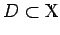
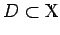

Inhalt Index DeskTop Bronstein

 Funktionalanalysis Nichtlineare Operatoren Monotone Operatoren in Banach-Räumen
Funktionalanalysis Nichtlineare Operatoren Monotone Operatoren in Banach-Räumen


Ein beliebiger Operator  heißt demistetig im Punkt , wenn für jede (in der Norm von
heißt demistetig im Punkt , wenn für jede (in der Norm von  ) zu x0 konvergente Folge die Folge in
) zu x0 konvergente Folge die Folge in  schwach zu T(x0) konvergiert. T heißt demistetig auf der Menge
schwach zu T(x0) konvergiert. T heißt demistetig auf der Menge  , wenn T in jedem Punkt von D demistetig ist.
, wenn T in jedem Punkt von D demistetig ist.
In diesem Abschnitt wird eine andere Verallgemeinerung des aus der reellen Analysis bekannten Monotoniebegriffs eingeführt. Seien jetzt  ein reeller BANACH-Raum,
ein reeller BANACH-Raum,  sein Dual,  und ein nichtlinearer Operator. Dann heißt T monoton, wenn für die Ungleichung gilt. Ist ein HILBERT-Raum, dann ist das Skalarprodukt gemeint, während im Falle eines BANACH-Raumes bzgl. der Bezeichnung auf Abschnitt Fortsetzung von linearen Funktionalen verwiesen wird. Der Operator T heißt streng monoton wenn es eine Konstante c > 0 gibt, so daß für gilt.
sein Dual,  und ein nichtlinearer Operator. Dann heißt T monoton, wenn für die Ungleichung gilt. Ist ein HILBERT-Raum, dann ist das Skalarprodukt gemeint, während im Falle eines BANACH-Raumes bzgl. der Bezeichnung auf Abschnitt Fortsetzung von linearen Funktionalen verwiesen wird. Der Operator T heißt streng monoton wenn es eine Konstante c > 0 gibt, so daß für gilt.
Ein Operator heißt koerzitiv, wenn gilt.